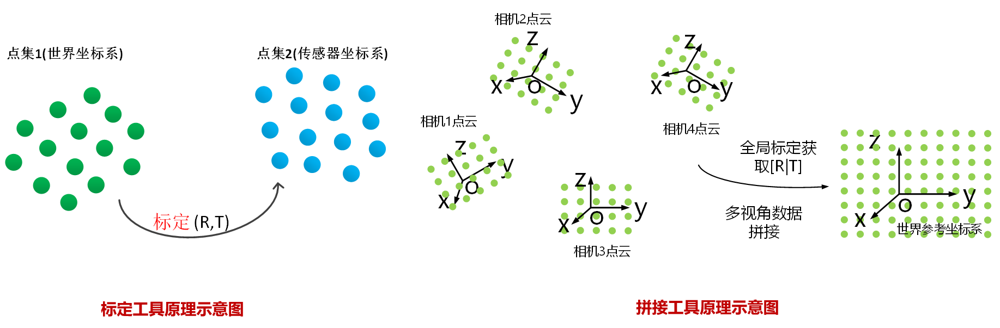
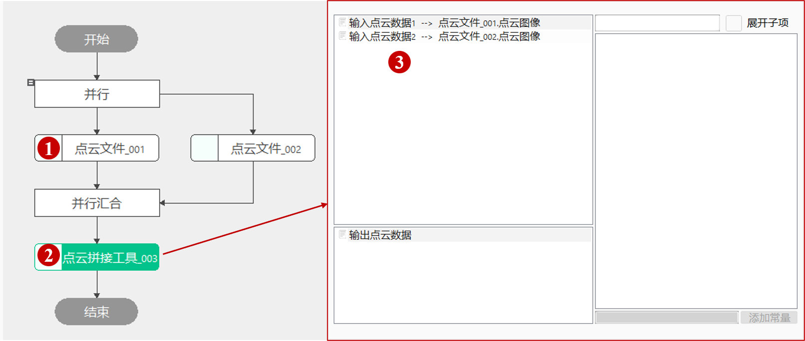
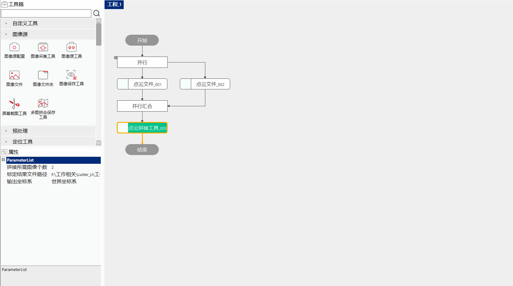
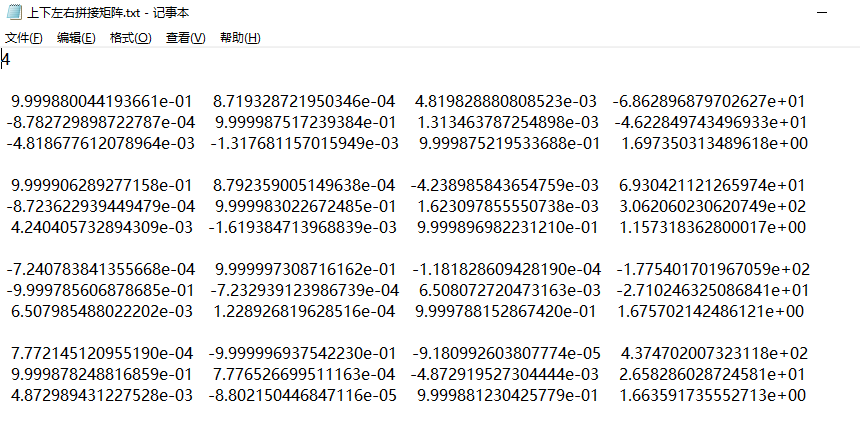
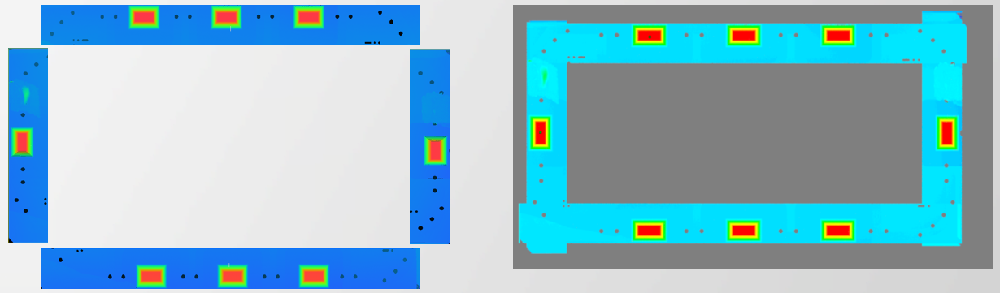
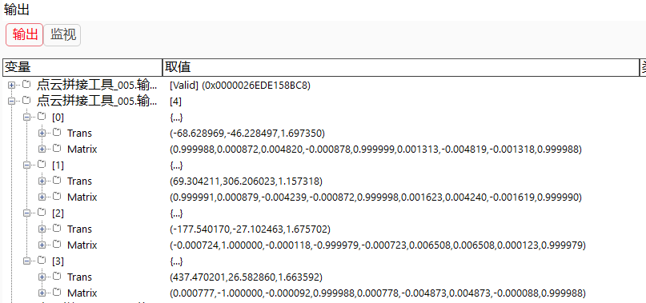

Công cụ ghép đám mây điểm thực hiện ghép nhiều ảnh đám mây điểm dựa trên ma trận biến đổi cứng đầu vào.

Công cụ này chủ yếu dùng cho các dự án ghép theo hướng XY hoặc Z；ví dụ：
Tình huống 1：Dự án kiểm tra độ phẳng điện thoại IPhone
Do yêu cầu độ chính xác đo lường cao, sản phẩm này cần thực hiện ghép, đồng thời tọa độ điểm đo do khách hàng cung cấp được định nghĩa theo hệ tọa độ sản phẩm do khách hàng chỉ định, vì vậy cần thực hiện căn chỉnh hệ tọa độ trước, mới có thể định vị chính xác đến điểm đo.
Tình huống 2：Dự án đo độ dày

Step1:Thêm file đám mây điểm（2-16 cái）, công cụ ghép đám mây điểm, sau đó nhấp đúp để mở chuỗi tham số công cụ, liên kết file đám mây điểm, như trong Hình 3-1；
Step2:Chọn các cách khác nhau để thiết lập ma trận ghép theo nguồn ma trận, ví dụ thiết lập tham số ghép trong thanh thuộc tính, tải file ma trận chuyển đổi（file .txt）, như trong Hình 3-2；


| Tên tham số | Mô tả tham số |
|---|---|
| Dữ liệu đám mây điểm đầu vào | Nhập ảnh đám mây điểm cần ghép |
| Tên tham số | Mô tả tham số |
|---|---|
| Số lượng ảnh cần ghép | Số lượng ảnh cần ghép |
| Nguồn ma trận | Bao gồm hai loại：nhập bên ngoài từ thuộc tính và thiết lập trên giao diện nâng cao |
| Đường dẫn file kết quả hiệu chuẩn | Nhập file hiệu chuẩn, định dạng file hiệu chuẩn như phần 7 |
| Hệ tọa độ đầu ra | Bao gồm hai loại：hệ tọa độ thế giới và hệ tọa độ cảm biến |
| Bật tính toán song song | Có bật tính toán song song hay không, khi chọn Có, thuật toán sẽ bật phương thức tính toán song song OpenMp, có thể nâng cao tốc độ tính toán, nhưng có thể xảy ra tình trạng thời gian xử lý không ổn định, khi chọn Không, thuật toán sẽ tắt tính toán song song OpenMp. |
| Tỷ lệ phần trăm số luồng | Thiết lập tỷ lệ phần trăm số luồng của tính toán song song, phạm vi hợp lệ là (0, 0.75]，tương ứng biểu thị phạm vi tỷ lệ phần trăm (0%, 75%]. |
Giao diện nâng cao có thể dùng để thiết lập ma trận như sau：
| Tên | Mô tả tham số |
|---|---|
| Ma trận | Nhập ma trận biến đổi trong giao diện nâng cao |
| Tên tham số | Mô tả tham số |
|---|---|
| Dữ liệu đám mây điểm đầu ra | Xuất ảnh đám mây điểm đã ghép |
| Ma trận biến đổi cứng đầu ra | Hiển thị ma trận biến đổi cứng |
| Tên tham số | Mô tả tham số |
|---|---|
| Dữ liệu đám mây điểm đầu ra | Xuất ảnh đám mây điểm đã ghép |
| Ma trận biến đổi cứng đầu ra | Hiển thị ma trận biến đổi cứng |
| Kết quả thực thi | Kết quả thực thi công cụ |
| Thời gian thực thi | Thời gian thực thi công cụ |
Tham khảo “\Samples\3D\点云\点云拼接工具.gvp”。
Step1：Sử dụng các phần mềm như Polyworks để hiệu chuẩn các target như tháp chuẩn, thu được ma trận biến đổi cứng；
Step2：Nhập ma trận biến đổi cứng vào VA, định dạng ma trận trong VA như Hình 7_1, dòng đầu tiên là số lượng ảnh ghép, tiếp theo lần lượt là ma trận biến đổi cứng tương ứng với từng ảnh đám mây điểm；

Step3：Nhập ma trận biến đổi cứng vào VA, sử dụng tháp chuẩn để thực hiện ghép ảnh nhằm kiểm chứng hiệu quả, trước và sau khi ghép như Hình 7_2, đồng thời, sau khi thực thi thành công có thể thấy ma trận biến đổi cứng đã nhập trong phần giám sát, như Hình 7_3；


Step4：Chuyển ảnh đầu vào sang sản phẩm vật liệu, sau đó thực hiện tính toán ghép；